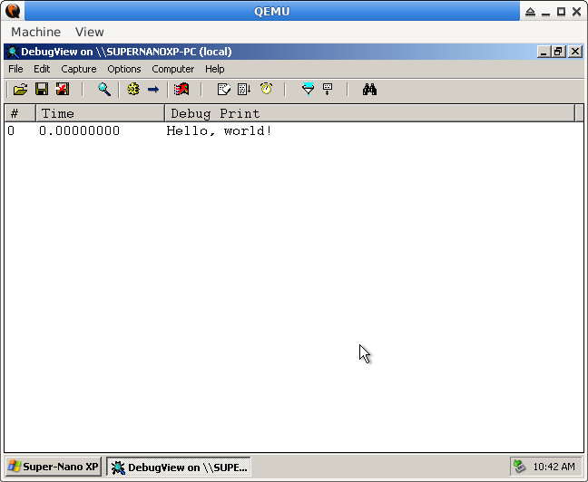
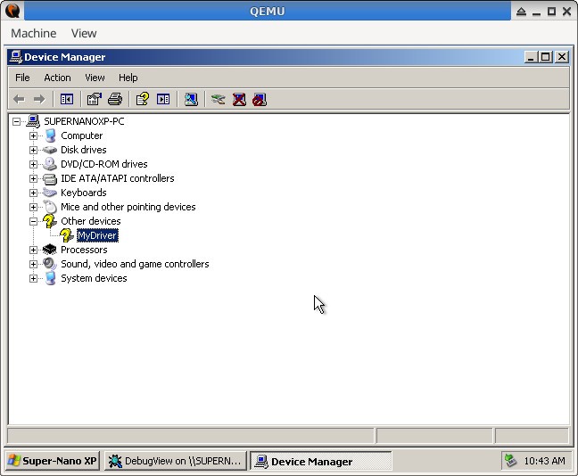
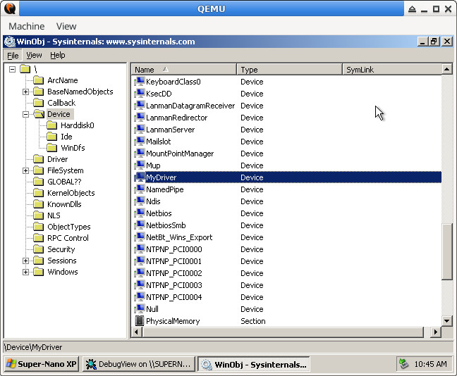

Steward
分享是一種喜悅、更是一種幸福
驅動程式 - Windows Driver Model (WDM) - 使用範例 - C/C++ (DDK) - Hello, world!
參考資訊：
https://wasm.in/
http://four-f.narod.ru/
https://github.com/steward-fu/wadk
main.c
#include <wdm.h>
static PDEVICE_OBJECT pNextDevice = NULL;
static NTSTATUS AddDevice(PDRIVER_OBJECT pMyDriver, PDEVICE_OBJECT pPhyDevice)
{
PDEVICE_OBJECT pMyDevice = NULL;
UNICODE_STRING usDeviceName = { 0 };
DbgPrint("Hello, world!");
RtlInitUnicodeString(&usDeviceName, L"\\Device\\MyDriver");
IoCreateDevice(pMyDriver, 0, &usDeviceName, FILE_DEVICE_UNKNOWN, 0, FALSE, &pMyDevice);
pNextDevice = IoAttachDeviceToDeviceStack(pMyDevice, pPhyDevice);
pMyDevice->Flags &= ~DO_DEVICE_INITIALIZING;
pMyDevice->Flags |= DO_BUFFERED_IO;
return STATUS_SUCCESS;
}
static void Unload(PDRIVER_OBJECT pMyDriver)
{
}
static NTSTATUS IrpDispatch(PDEVICE_OBJECT pMyDevice, PIRP pIrp)
{
PIO_STACK_LOCATION pStack = IoGetCurrentIrpStackLocation(pIrp);
if (pStack->MinorFunction == IRP_MN_REMOVE_DEVICE) {
IoDetachDevice(pNextDevice);
IoDeleteDevice(pMyDevice);
IoCompleteRequest(pIrp, IO_NO_INCREMENT);
return STATUS_SUCCESS;
}
IoSkipCurrentIrpStackLocation(pIrp);
return IoCallDriver(pNextDevice, pIrp);
}
NTSTATUS DriverEntry(PDRIVER_OBJECT pMyDriver, PUNICODE_STRING pMyRegistry)
{
pMyDriver->MajorFunction[IRP_MJ_PNP] = IrpDispatch;
pMyDriver->DriverExtension->AddDevice = AddDevice;
pMyDriver->DriverUnload = Unload;
return STATUS_SUCCESS;
}
L41~43：只有做Callback設定的動作，需要設定AddDevice、PNP、DriverUnload這三個Callback
L11~15：產生一個Device Object，用來管理新加入的裝置(純軟體虛擬裝置也算)，接著初使化相關旗標
L28~36：主要處理移除Device Object的動作，其餘Irp不處理，直接往下傳遞
main.inf
[Version] Signature="$WINDOWS NT$" Class=Unknown Provider=%MFGNAME% DriverVer=10/01/2026,1.0.0.0 [Manufacturer] %MFGNAME%=DeviceList %MFGNAME%=DeviceList,NTamd64 [DeviceList] %DESCRIPTION%=DriverInstall.NTamd64,*MyDriver [DeviceList.NTamd64] %DESCRIPTION%=DriverInstall.NTamd64,*MyDriver [DestinationDirs] DriverCopyFiles=12 [SourceDisksNames] 1=%INSTDISK% [SourceDisksFiles] main.sys=1 [DriverInstall.NTamd64] CopyFiles=DriverCopyFiles [DriverCopyFiles] main.sys [DriverInstall.NTamd64.Services] AddService=FILEIO,0x00000002,DriverService [DriverService] DisplayName=%SERVICE_DESC% ServiceType=1 StartType=3 ErrorControl=1 ServiceBinary=%12%\main.sys [DriverInstall.NTamd64.HW] AddReg=DriverHwAddReg [DriverHwAddReg] HKR,,SampleInfo,,"" [Strings] MFGNAME="MyDriver" INSTDISK="MyDriver Disc" DESCRIPTION="MyDriver" SERVICE_DESC="MyDriver Kernel Driver"
autorun.inf
[autorun] open=run.bat
run.bat
e:\devcon.exe install e:\main.inf *mydriver e:\devcon.exe remove e:\main.inf *mydriver
fix.py
import os
import sys
import pefile
if len(sys.argv) != 2:
print('Usage: {} xxx'.format(sys.argv[0]))
sys.exit()
fname = sys.argv[1]
pe = pefile.PE(fname);
pe.OPTIONAL_HEADER.CheckSum = pe.generate_checksum();
pe.write(fname);
Makefile
all: clang -target i686-pc-windows-msvc -I/opt/wadk/xpddk/inc/wxp -I/opt/wadk/xpddk/inc/ddk/wxp -I/opt/wadk/xpddk/inc/ddk/wdm/wxp -I/opt/wadk/xpddk/inc/crt -D_X86_ -Xclang -fdefault-calling-conv=stdcall -c main.c lld-link main.o /driver /base:0x10000 /subsystem:native /entry:DriverEntry /safeseh:no "/opt/wadk/masm32/lib/wxp/i386/ntoskrnl.lib" /out:main.sys python3 fix.py main.sys run: genisoimage -R -J -o cdrom.iso autorun.inf main.sys main.inf run.bat /opt/wadk/tools/devcon.exe myqemu winxp clean: rm -rf main.sys main.o cdrom.iso
編譯
$ make $ make run
完成

裝置管理員

DeviceObject
